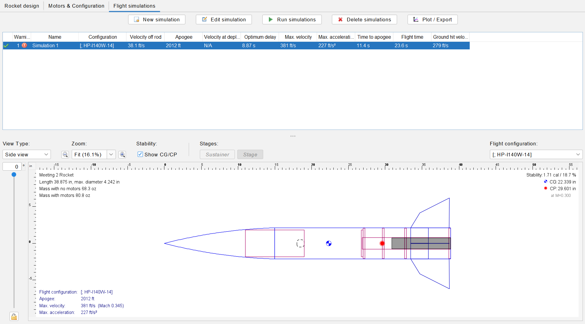

Preliminary design and simulation work supporting a competitive student rocket program.
This project documents my contributions to the Madison Aerospace Club rocket team, with a focus on early-stage vehicle configuration, motor selection, and performance prediction using OpenRocket simulations.
Tools: OpenRocket
 OpenRocket model used for preliminary performance and stability studies.After evaluating several propulsion options in simulation, the team selected the AeroTech H100W-14A single-use composite motor as the baseline propulsion system for the competition rocket. This decision was based on predicted apogee performance, thrust profile characteristics, availability, and compatibility with airframe constraints.
Type: 38 mm Disposable Motor System (DMS) – Single Use
Propellant: White Lightning™ composite propellant
Certification: TRA / NAR / CAR certified
Key Specifications
This motor was incorporated directly into the OpenRocket model to refine the vehicle’s mass properties, center-of-gravity location, and expected flight trajectory. Simulation results indicated that the H100W-14A provided a strong balance between achievable apogee and a manageable stability margin for the current airframe geometry.
Selection of a commercially certified motor also ensured compliance with club safety requirements and competition regulations while enabling repeatable performance for future flight validation.
Once fabrication and flight testing are completed, predicted performance from OpenRocket will be compared against measured flight data including apogee, acceleration profile, and descent time. Differences between simulation and real-world performance will be used to refine modeling assumptions such as drag coefficients, mass distribution, and recovery system behavior.
This comparison will provide practical insight into the accuracy of early design models and help improve the simulation workflow for future rocket iterations within the club.
This section will be updated with quantitative results, plots, and flight analysis following upcoming launch tests.
The initial model and motor selection are complete and ready to support detailed geometry development, fabrication, and flight validation. This project page will continue to evolve as simulations and real-world testing progress.